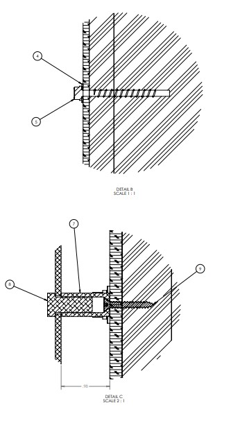
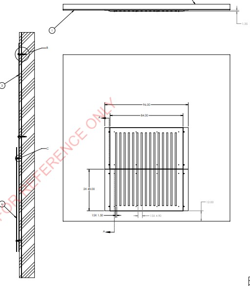
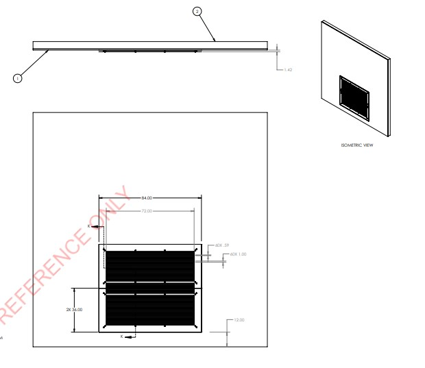
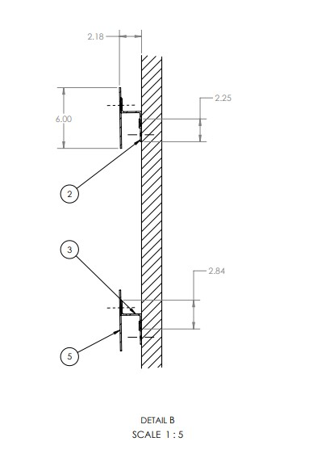
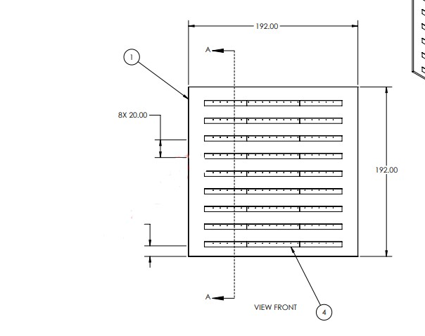
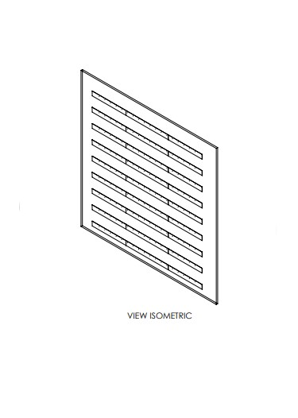
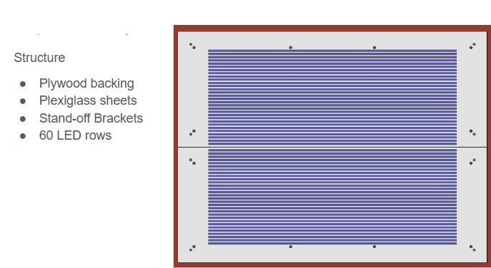

Group Role → 🛠 Structure Builder and Mount Designer 🛠
Logan's Brief Description
"
Logan Kendall's previous Z-Bar design serves as the LED's main mounting structure, ensuring the design is held and displayed properly. He's using Solidworks to accomplish the design of this structure and faced challenging decisions regarding how the Z-Bar implementation could help diffuse the LEDs' light, ensuring they are not too bright for safe and enjoyable viewing.
The design area provided has drywall, allowing for drilled-in mounted support.
The nearly 16-foot design structure is built to hold 40 lbs, providing a high safety margin that can easily support 15 pounds worth of LED strips.
The Z-Bar design effectively diffuses the emitted light, providing a pleasing visual experience for users interacting with the display.
The updated Design 3/5 required Logan's design to accommodate holding the LEDs, ESP32 (microcontroller), power supply, and acrylic glass to protect the LEDs. The images below will showcase a variety of Logan's Solidworks schematics to achieve this updated structure, also previous ideas such as the Z-Bar.
"







♦Mechanical Engineer, Logan♦